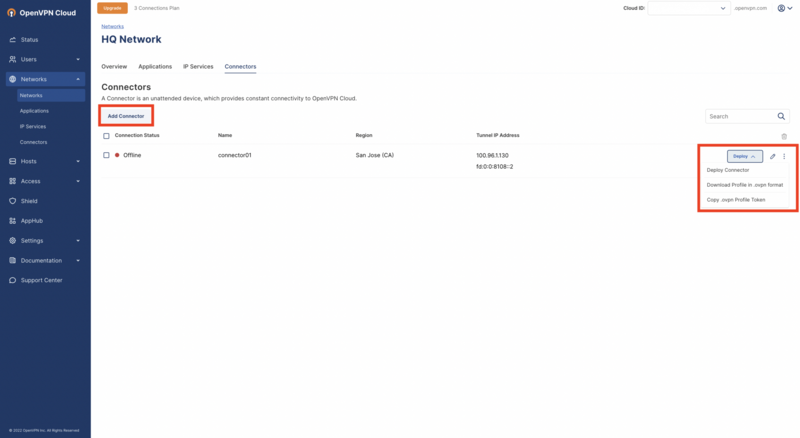

User Guide - Network Settings
Network list screen
Network settings enable Administrators to view, add, edit, and filter Networks within a WPC account. You may view all Networks within a WPC account from the Network list screen, or details about specific Networks from the Overview screen.
The Network list screen can be accessed by navigating to Networks from the administration portal. This screen lists all Networks within a tenant’s account, including:
Connection Status
Network Name
Network Internet Access
Network Internet Gateway (Egress) status
Applications accessible to the Network
IP Services accessible to the Network
Optional Description
You may add, edit, delete or filter Networks from this screen. To add a Network click the Add Network button. To edit, click the edit icon (pencil) of the Network to update. To delete, select the checkbox of the Network, then click the delete icon (trash can). To filter Networks, click the filter icon (next to the delete icon), and select your filter.
Applications list screen
The Applications list screen can be accessed by navigating to Networks > Applications from the administration portal. This screen lists all Applications accessible to Networks within the WPC account, including:
Application Name
Application Domain
Application Type (Protocols and Ports)
Network
You may add, edit or delete an Application from this screen. To add an application to the Network click Add Application. To edit, click the edit icon (pencil) of the Application to update. To remove, click the delete icon (trash can) of the Application to be deleted.
IP Services list screen
The IP Services list screen can be accessed by navigating to Networks > IP Services from the administration portal. This screen lists all Network IP Services accessible within a WPC account including:
IP Service Name
IP Address / Subnet (IPv4 and IPv6)
Service Type (Protocols and/or Ports)
Use as Source status
Network
Routes
IP Address / Subnet
Network
(Optional) Network Description
You may add, edit or delete an IP Service or Route from this screen. To add an IP Service or a corresponding Route, click Add IP Service or Add Route. To edit, click the item's edit icon (pencil) to update. To remove, click the delete icon (trash can) of the item to be deleted.

Connectors list screen
The Connectors list screen can be accessed by navigating to Networks > Connectors from the administration portal. This screen list s all Connectors within a tenant’s account including:
Connection Status
Connector Name
Connector Region(s)
Tunnel IP Address (IPv4 and IPv6)
Network(s) the Connector is assigned to
You may add, edit, or delete Connectors from this screen. To add a Connector, click Add Connector. To edit, click the Connector icon (pencil) to update. The Deploy Connector drop-down menu allows:
Deploy Connector
Download Profile in .ovpn format
Copy .ovpn Profile Token
The kebab menu (three dots) allows:
Set Split Subnet
Revoke profile certificate
Delete
Network Overview screen
To access a Network’s Overview screen, navigate to Networks, and click the Network Name.
The Network Overview screen is a high-level summary of a selected Network configuration. The Overview screen displays:
Network connection Status
Network Name
Network Internet Access status
Network Internet Gateway status
IP Address / Subnet assigned for tunneling (IPv4 and IPv6)
This Overview screen is segmented into 3 tabs:
Applications
IP Services
Connectors
To edit a Network, click Edit Network Details.
To delete a Network, click the kebab menu (three dots).
Applications tab
To access a selected Network’s Applications, navigate to Networks, click the Network Name, and click the Applications tab.
The Applications tab within the Network Overview screen, lists the Applications accessible to the selected Network and includes:
Application Name
Application Domain
Application Type (Protocols and/or Ports)
You may add, edit or delete an Application from this screen. To add an application to the Network click Add Application. To edit, click the edit icon (pencil) of the Application to update. To remove, click the delete icon (trash can), of the Application to be deleted.
IP Services tab
The IP Services tab within the Overview screen, lists the IP Services and Routes accessible to the selected Network and includes:
IP Service Name
IP Address / Subnet
Service Type
Use as Source status
Route
IP Address / Subnet
(Optional) Description
You may add, edit or delete an IP Service or Route from this screen. To add an IP Service or Route, click Add IP Service or Add Route. To edit, click the item's edit icon (pencil) to update. To delete, select the checkbox of the item and click the delete icon (trash can).
Connectors tab
The Connector’s tab within the Overview screen lists all Connectors connected to the selected Network, and includes:
Connection Status
Connector Name
Connector Region(s)
Tunnel IP Address
Network(s) the Connector is assigned to
You may add, edit, delete Connectors from this screen. To add a Connector, click Add Connector. To edit, click the edit icon (pencil) of the Connector to update. To delete, select the checkbox of the Connector, then click the delete icon (trash can).
The Deploy Connector drop-down menu allows:
Deploy Connector
Download Profile in .ovpn format
Copy .ovpn Profile Token
The kebab menu (three dots) allows:
Set Split Subnet
Revoke profile certificate